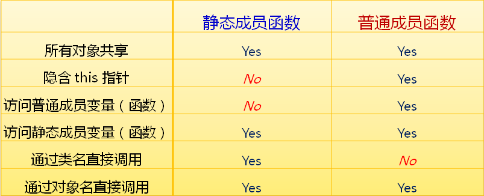
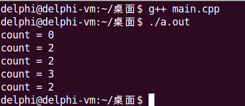

先来回顾一下普通成员变量
在C++中还可以定义静态成员变量
静态成员变量的定义
Type ClassName::VarName = value;#include <stdio.h>
class Test
{
private:
static int c;
};
int Test::c = 0;与静态成员变量类似，静态成员函数是类中特殊的成员函数
class Demo
{
public:
static void StaticFunc(const char *s)
{
printf("StaticFunc: %s\n", s);
}
static void StaticSetI(Demo &d, int v);
};
void Demo::StaticSetI(Demo &d, int v)
{
d.i = v;
}静态成员函数 VS 普通成员函数

实现如下需求
#include <stdio.h>
class Test
{
private:
static int cCount;
public:
Test();
~Test();
static int GetCount();
};
int Test::cCount = 0;
Test::Test()
{
cCount++;
}
Test::~Test()
{
--cCount;
}
int Test::GetCount()
{
return cCount;
}
int main()
{
printf("count = %d\n", Test::GetCount());
Test t1;
Test t2;
printf("count = %d\n", t1.GetCount());
printf("count = %d\n", t2.GetCount());
Test *pt = new Test();
printf("count = %d\n", pt->GetCount());
delete pt;
printf("count = %d\n", Test::GetCount());
return 0;
}